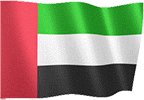
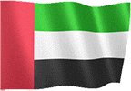

GUIA DE JOGO v3
Selecione o idioma do guia do jogo.


 

JOGO GERAL
● O objetivo do jogo é conquistar o mundo inteiro fazendo operações terrestres ou usando a agência secreta.
● Você pode usar as opções relacionadas à economia, segurança e gerenciamento do país na tela do jogo.
● Para mudar para o dia seguinte, você deve usar a seta no canto inferior direito da tela do jogo.
● A renda diária e a população diária são adicionadas a todos os estados nas transições dos dias.
● Quando o dia terminar, outros estados podem fazer ofertas para o seu país ou podem ocorrer eventos mundiais aleatórios.
● As decisões que você toma sobre ofertas e situações podem afetar sua economia, população e relacionamentos com outros governos.
ECONOMIA
● Você pode ganhar dinheiro investindo em seu país.
● Você pode ganhar dinheiro escolhendo uma taxa de imposto.
● Você pode ganhar dinheiro processando os recursos minerais encontrados.
● Você pode fazer investimentos enviando seus empresários para outros países.
● Você ganha renda diária de instituições públicas.
● A pesquisa da fábrica e da indústria gera uma receita extra.
● Você ganha um dinheiro extra de cada turista que vem ao seu país.
● Você pode apoiar sua economia com empréstimos.
● Se você conquistar países, ganhará um grande prêmio único.
● 100% da renda diária dos países que você ocupa são adicionados a você.
● (Você pode conferir na seção Estatísticas - Receitas da conquista.)
● Você pode ganhar dinheiro realizando operações na seção de Segurança Interna.
● Você pode ganhar dinheiro fazendo ataques cibernéticos em outros países.
● Você pode ganhar dinheiro declarando uma Mobilização Nacional.
● Você pode ganhar dinheiro usando seu serviço secreto.
CENTRO DE OPERAÇÃO
● Você pode invadir países com operações terrestres.
● Se você tiver sucesso na campanha terrestre, ganhará pontos de captura.
● Se o ponto de invasão chegar a 100%, o país será conquistado.
● Você pode enfraquecer o exército do país inimigo com ataques aéreos.
● Você pode fazer ataques cibernéticos em outros países.
● Você pode usar as opções extras ativando o prédio do consulado.
● Você pode obter relatórios militares, econômicos e detalhados, colocando espiões nos países.
● Você pode fazer acordos de amizade com os países com os quais está em guerra.
● Você pode fazer todos os ataques com permissões.
● Você pode aplicar embargo a países.
PRODUÇÃO DOMÉSTICA
● Você pode produzir o produto que deseja na seção de produção.
● Você deve enviar solicitações comerciais de países para vender seus produtos.
● Você pode negociar preços de produtos que outros países desejam comprar.
● Somente países amigos querem comprar produtos de você.
● Quanto mais variedade de produtos você tiver, maior será a probabilidade de você negociar.
● Ao melhorar suas relações comerciais com outros países, você pode aumentar os preços de suas ofertas.
SEGURANÇA PESSOAL
● Os países com os quais você está em guerra podem assassiná-lo.
● Você deve considerar o Relatório do Consultor.
● Para se proteger de assassinatos, você deve nomear um conselheiro altamente protetor.
● Você também precisa atualizar os pacotes de suporte.
ORGANIZAÇÃO SECRETA
● Você pode iniciar motins em outros países estabelecendo o Serviço Secreto.
● Você pode assassinar com o Serviço Secreto.
● Você só pode usar pessoal treinado nas operações.
● Sua equipe treinada e suas armas aumentarão sua força operacional.
MONTAGEM e ELEIÇÕES
● As eleições são realizadas a cada 365 dias.
● Você precisa obter o maior número de votos para vencer as eleições.
● Se você for bem-sucedido nas escolhas feitas, ganhará um dinheiro extra.
● Faça leis, comícios, distribua dinheiro, entrevistas para ganhar votos.
● Se você perder as eleições, deve intervir dentro de 8 dias.
● Se a intervenção militar falhar, o jogo acaba.
(PREMIUM) ALIANÇAS GLOBAIS
● Você pode formar sua própria aliança ou entrar em alianças existentes.
● Você pode realizar reuniões com estados aliados.
● Você pode ganhar dinheiro completando os pedidos dos estados aliados.
● A pesquisa da aliança ativa opções extras.
● Você pode fortalecer sua defesa usando produções de aliança.
● Você pode conduzir operações conjuntas com estados aliados.
● Se você atacar estados membros da mesma aliança, você pode ser expulso da aliança.
(PREMIUM) NAÇÕES UNIDAS
● Você pode votar em 5 resoluções diferentes usando as Nações Unidas.
● Apoio financeiro ou decisões de sanções econômicas podem ser tomadas para outros países.
● Novas decisões não podem ser feitas até que as decisões ativas terminem.
● Apenas os países não conquistados votam nas decisões.
(PREMIUM) INDÚSTRIA PESADA
● 5 armas e equipamentos personalizados diferentes podem ser produzidos com a indústria pesada.
● Apenas países amigáveis com solicitações comerciais podem enviar uma solicitação comercial.
● Armas produzidas não podem ser usadas em batalhas.
VENCER E PERDER
● Se você conquistar todos os países 100%, você ganha o jogo.
● Se o seu dinheiro for inferior a -20 milhões, o jogo termina.
● Se a felicidade for menor que 0, o jogo acabou.
CERCA DE
● Você pode compartilhar o conteúdo que deseja adicionar e suas sugestões conosco.
● Você pode entrar em contato conosco por e-mail na página sobre no jogo.
● Ficaremos felizes se você marcar nosso jogo.
● bons jogos.